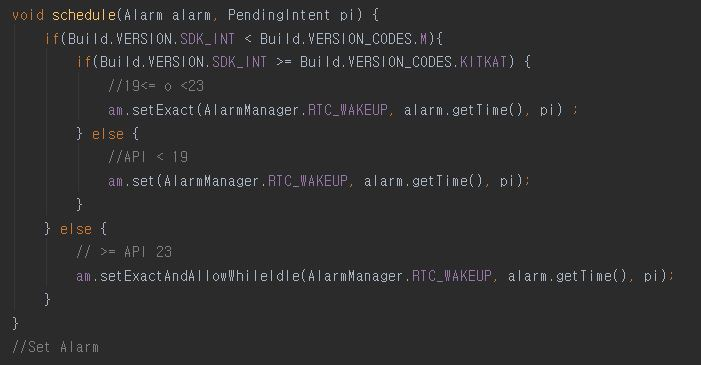

2015년 인하대학교 컴퓨터공학과에 입학을 하였고 학부 수업에서 Computer Science에 대해 배우며 개발자의 꿈을 꾸기 시작했습니다. 2019년 초부터 2020년 초까지 (주)
소프트스퀘어드 개발팀에서 프리랜서로 근무를 하면서 주로 안드로이드 개발을 하였고 부가적으로 Html, Css, Javascript를 이용하여 웹 개발 그리고 PHP, MySQL을 이용하여 서버
개발도 하고 있습니다.
지금까지 했던 프로젝트들 중 기억에 남는것은 아임폴리스, 인사관리 프로젝트, 모아리 프로젝트이며 항상 배우는 개발자가 되고 싶습니다.
현대사회에서 많은 사람들은 불법을 저지르고, 사회에서는 사람들의 무분별한 불법행위를 줄이고자 많은 노력을 기울이고 있습니다. 그럼에도 불구하고 아직도 많은 불법행위가 빈번히 일어나고
있습니다. 그래서 저희는 불법행위를 줄이는데 도움을 주는 어플리케이션을 제작하였습니다.
사용자가 특정사람의 불법 행위를 하는 영상을 가지고 있다면(블랙박스 등) 어플리케이션을 통해 신고를 합니다. 이때 사용자가 신고한 신고 횟수가 일정량을 채울 경우 관리자를 통해
리워드를 받는 시스템입니다. 관리자는 사용자의 신고내역을 관리자페이지에서 확인하여 신고처리 여부를 결정할 수 있습니다. 저가 이 프로젝트를 맡은 가장 큰 이유는 다음과 같습니다.
사용자는 영상을 통해 신고하는 공수가 있지만 리워드를 통해 보상을 받을 수 있고, 사회적 측면에서는 리워드를 제공하지만 빈번히 일어나는 불법 행위가 줄어드는 효과가 도출됩니다. 즉,
어느 누구도 손해보는 것이 아닌 사용자와 사회적 측면 모두 긍정적 효과를 볼 수 있는 프로젝트라고 생각하여 이 프로젝트를 착수하게 되었습니다.
1) Android
- 동영상 편집
- 웹 페이지에서 신고내역 변경에 따른 실시간 FCM 알림
- 블랙박스 영상에서 주어지는 txt 파일 데이터 파싱 개발
- Android Layout, RecyclerView, Viewpager, FrameLayout, Glide 등 Android UI 구성
- Google Map 3rd party API 사용
- Paging 기법 사용
- Retrofit Http 통신
2) Web
- Session을 통한 자동 로그인 관리
- Google map 3rd party API (javascript) 연동 및 신고정보에 대한 좌표 마커 표시
- 신고상태에 대한 그래프 실시간 반영
- 신고정보 목록 테이블 구성
- Excel export 기능
- 비동기 Ajax 통신
-1) Android
프로젝트 기획 단계에서 기술적 한계를 검토할 때 동영상 편집부분에 대한 고민이 있었습니다. 처음부터 동영상 편집 부분을 구현할 경우 공수가 너무 많이 들고 구현이 가능할지에 대해서도
확실하지 않았기 때문입니다. 그래서 기존에 동영상 편집 오픈소스가 있는지를 먼저 검토했고 그 결과 MIT license로 돼있던 HGLVideoTrimmer 코드를 찾을 수
있었습니다. 그래서 이 코드에 대해서 상업적으로 사용가능한지를 먼저 검토하였고 그 후 이 코드가 계약서에 명시 돼있는 API 5.0 이상에서 호환되는지를 검토했습니다.
(Lollipop이상) 이후에 디자이너가 준 디자인에 맞게 코드를 수정하였으며 동영상 편집결과를 핸드폰에 내장된 storage에 저장하고 이 영상을 firebase에 보내어
firebase storage에 저장을 했습니다. 그리고 서버에는 storage에 저장한 URL을 저장하였습니다. 왜냐하면 서버에 영상을 저장할 경우 서버의 용량도 커질 뿐만 아니라
테스트 결과 서버로 영상을 저장하고 불러오는 과정보다 firebase에 영상을 저장하고 url을 통해 불러오는 것이 좀 더 빠르기 때문에 이와 같은 방식을 채택하였습니다.
이 후에는 디자이너가 준 디자인대로 작업을 시작했고 UI/UX 관련된 코드 구현에 있어서는 큰 어려움 없이 프로젝트를 진행할 수 있었습니다. 하지만 이 프로젝트는 다양한 Android
API가 사용될 수 있으므로 Q/A 기간에 많은 기종(API, 화면 크기)을 대상으로 테스트를 하면서 예상치 못한 버그가 나왔습니다. 예를 들어 statebar의 경우 특정
API에서는 색이 다르게 나오는 경우를 확인했고, 구글지도의 경우 APK파일을 추출한 후의 SHA1 Key값과 Android Studio에서 build했을때의 SHA1 Key값이 다를
수 있다는 등 개발할 당시에 몰랐던 버그가 나와 다시 한번 validation의 중요성을 배웠습니다.
또한 고객사가 txt파일로 신고내역에 대한 정보를 보내면 파일 입출력을 이용하여 신고장소 위도, 경도, 차량 속도 등을 뽑아내고 이 정보를 google map에 마커를 이용하여
표시하는 작업을 수행하였습니다. 그리고 관리자가 웹 페이지에서 신고내역을 변경했을 경우 firebase에서 제공하는 FCM 알림을 사용하여 firebase에서 안드로이드로 신호를
보내면 안드로이드에서 이를 receive하는 FCM부분을 구현하였습니다.
server와 통신 시 보안을 목적으로 로그인 한 이후에는 access-token 값을 가지고 통신을 하였으며 GET/POST/PATCH 등의 method와 함께 http 통신을
진행하였습니다. 프로젝트 진행 도중 든 생각이 서버와 통신하는 코드들이 비슷하고 같은 작업임에도 불구하고 이를 만드는데 공수가 매번 드는 점을 생각하였습니다. 그래서 이러한 반복되는
공수를 줄이고자 저의 나름대로 MVC 패턴 & 서버 통신 & token 관리 등 프로젝트마다 자주 사용하는 코드들을 탬플릿화 하여 만들었습니다. 예를 들어 Activity,
Fragment, Adapter, Data등 자주 사용하는 것들에 대해서 Package로 나누고 JWT의 경우 header에 넣고 서버와 통신을 자주하므로 이를
sharedpreference에 넣어 관리하였으며 서버와 통신하는 부분의 코드 반복으로 interface에 서버와 통신하는 메소드들을 정의하는 등의 반복되는 코드들을 줄이는데
노력하였습니다.
또한 신고내역을 Recyclerview로 보여주는 작업에서 한 번에 많은 양의 데이터를 받아올 경우 네트워크 낭비가 심해 Paging기법을 사용하였습니다. Recyclerview에서
제일 마지막을 스크롤을 했을 경우에 마지막 index+1을 서버로 전송하고 서버는 받은 index로부터+10개(10개의 데이터가 없을 경우 가능한데이터들만)의 데이터를 보내줍니다.
이때 클라이언트에서 받은 data가 10개 미만일 경우 boolean 변수를 false처리를 해줍니다. 이 변수를 통해 서버와 통신을 더 할지 말지를 결정할 수 있습니다. 왜냐하면 이
변수를 통해 마지막 스크롤을 했을 경우에 이 변수가 false일 경우(더 이상 읽어 올 데이터가 없음) 서버에 index를 전송하지 않습니다.
-2) Web
이전에 진행했던 JSP/Servlet과 같은 server side rendering이 아닌 html/css/js로 front-end 작업을 한 후 서버와의 통신이 필요할 때 비동기
방식의 ajax 통신을 하도록 구현하였습니다. 또한 session을 통해 로그인 정보를 관리하였으며 관리자 로그인 없이 url을 통해 해당 페이지로 갈 경우 로그인 페이지로 다시
이동하도록 validation을 처리하였습니다. 또한 web페이지의 경우에도 header에 JWT를 추가하여 통신을 진행하였습니다. 이때 요즘 Front-end로 자주 사용하는
React가 아닌 html/css/js로 작업한 이유는 개발기간 이였습니다. 이 프로젝트에서 구현되어야 하는 것들은 신고정보에 대한 3가지 그래프화, Google Map에 마커 표시,
신고내역들의 테이블화, 신고내역들을 excel로 export 기능 이였습니다. 이를 다 구현하는 것보다 비슷한 기능들이 있는 웹 템플릿이 있는지를 먼저 확인하였습니다. 그 결과
Highdmin_v1.4.0이 제공하는 템플릿을 찾았고 이 템플릿을 활용하는 방식으로 개발을 진행하였습니다.
서버로부터 x축에 대한 y축 좌표 정보를 읽어 온 후 그래프에 표시하였으며 y축 최대 높이는 읽어 온 y값들 중 최대 값 + n(그래프 종류에 따라 차이)으로 설정하였습니다. 또한
서버로부터 신고내역을 읽어 와 테이블에 표시를 하였으며 신고내역 테이블의 상태관리 항목 컬럼에서 신고상태를 변경할 수 있습니다. 이때 firebase를 이용하여 신고상태 변경정보를
알리고 firebase에서 해당 안드로이드 유저에게 알리는 과정을 거치게 됩니다. 그리고 구글에서 제공하는 Google Map을 이용하여 서버로부터 위/경도와 신고정보를 읽어와 해당
좌표에 마커 표시를 띄우는 작업을 수행하였습니다.
그리고 신고내역들을 리스트화 하여 테이블로 구성하였으며 다운로드 클릭 시 해당신고내역들을 서버로부터 테이블형식으로 읽어 와 이를 hidden table에 넣고 excel 파일로
export하는 기능을 구현하였습니다.
-3) Server
AWS EC2를 호스팅 받아 작업을 수행하였으며 서버는 Nginx1.10.3, DBMS는 MySQL 5.7.21, 개발 언어는 PHP 7.0.25를 사용하였습니다. 클라이언트와 통신
시 패킷을 좀 더 안전하게 하기 위해서 ID, PW를 주고받는 것이 아닌 JWT를 이용하였으며 서버단에서 이를 복호화 하는 작업을 수행하였습니다. 또한 사용자가 동영상을 보낼 경우
서버에는 firebase storage에 실제 영상을 저장하고 해당 URL을 DB에 저장하는 방식을 채택하였습니다. 왜냐하면 서버에 영상을 저장할 경우 서버의 용량도 커질 뿐만이
아니라 테스트 결과 서버로 영상을 저장하고 불러오는 과정보다 firebase에 영상을 저장하고 URL을 통해 영상에 접근하는 것이 빠르기 때문에 이와 같은 방식을 채택하였습니다. 그
외에 API를 구현하는데 있어서 최대한 REST API document에 맞게 개발하는데 노력하였습니다. 예를 들어 해당 API에서 Method를 상황에 맞게 GET, POST,
PATCH, DELETE로 설정하고 api naming하는 과정에서도 다른 사람들이 만든 API를 참고하며 수행하였습니다. 예를 들어 Query String(GET방식에서 자주
사용되며 data를 넘길 때 URL 뒤에?로 시작하며 &로 구분한다,)이나 Path Variable(예를 들어 /users/{:id}라 함은 userlist들 중에서 몇 번째 id를
접근할지)를 사용하는 등에 대해서 노력하였습니다.
web에서 ajax 통신 시 cors 문제가 생겼었고 서버 헤더에 allow-control 설정을 통하여 해결하였습니다. 서버 개발 중 데이터베이스에 대한 접근 횟수를 줄이고자
노력하였고 (SQL을 여러 번 호출하는 것이 아닌 JOIN이나 CASE와 같은 SQL을 조합한 구문 사용) 사용자가 자신의 신고내역 정보를 마이페이지에서 불러올 때 Paging 기법을
사용하였습니다. 이는 서버에서 한 번에 모든 데이터를 주는 것이 아닌 10개씩 끊어서 데이터 정보를 보내주게 처리하여 네트워크 사용량을 줄이는데 신경을 썼습니다. 다음은 Table
구조입니다.
학교를 다니면서 현업에 대한 궁금증이 있었습니다. 학교에서 배운 내용을 토대로 사회적으로 도움이 되는 프로젝트나 혹은 개발 관련된 사회생활을 직접 경험해 보고 싶었고 이 갈증을 해소한
프로젝트가 아임폴리스 프로젝트입니다. 다만 저가 학교를 다니고 있는 상황이었기 때문에 회사생활을 상주가 아닌 주마다 프로젝트 결과물을 공유하는 시간으로 진행하였습니다. 따라서 프로젝트
팀원들과 온라인상에서의 소통방식이 중요했고 저희는 Slack이라는 툴을 이용하여 소통을 진행하였습니다. 이러한 과정에서 저는 어떠한 방식으로 디자이너, 고객사, PM과 소통을 해야
하는지를 배웠습니다.
먼저 디자이너와 일을 할 때 제플린이라는 툴을 이용하여 UI를 받았고 이를 만드는데 있어서 개발자의 생각과 디자이너의 생각이 다르다는 점을 배웠습니다. 개발자의 생각으로는 이정도
마진과 이정도 폰트사이즈 이정도 애니메이션이면 괜찮겠지? 라고 생각하지만 디자이너는 버튼, 이미지 등 하나하나에 디자인적인 의미가 있고 생각이 있는데 이를 침범하는 것보다 디자이너의
영역을 존중해야 하는 점을 배웠습니다. 이러한 과정에서 자연스럽게 디자이너가 바라는 개발자가 무엇인지에 대해 배웠습니다. 저의 생각으로는 디자이너의 생각을 존중하며 소통이 자연스러워야
한다고 생각합니다. 소통이라 함은 디자이너는 개발자가 어느 영역까지 개발 가능한지를 모르기 때문에 어느 영역까지 개발 가능한지를 알려주는 등(에를 들어 awesome ui
github와 같은 사이트)의 소통이 필요하다고 생각합니다. 뿐만 아니라 디자이너도 사람인지라 절대적 신뢰보다는 기획적으로 틀린 UI가 있다면 이를 적극적으로 의견을 제시해야하는 점도
배웠습니다.
PM과 소통할 때 개발적으로 힘든 상황이나 견적서에 맞지 않는 내용이 있다면 미리 말을 해줘야 된다는 것을 배웠습니다. 위험한 상황(예를 들어 기한내에 개발을 못한다는 등)을 닥쳐서
말하는 것이 아닌 미리미리 요청을 드려야 하고 개발적으로 힘든 이슈가 있다면 PM에게 요청하여 도움을 받아야 된다고 생각합니다. 또한 PM과 소통할 때 항상 document화 하는
작업이 필요하다는 점을 배웠습니다. 이는 프로젝트 회의를 할 때 혹은 나중에 유비보수가 들어갈 때 이러이러한 이유때문에 이렇게 개발을 했고 이 판단을 누가했는지를 정확히 나누는데
도움이 되며 프로젝트가 끝나고 견적서에 있던 공수보다 더 든 내용이 무엇인지 점검하는데 유용하기 때문에 항상 document화 하는 작업이 필요하다는 점을 배웠습니다.
마지막으로 고객사와 소통하는 방식에 대해 배웠습니다. 고객사와 소통하는 방식은 저의 생각으로 카드게임이라고 생각합니다. 고객사와 견적을 측정하고 계약서를 작성하면 이상적으로는 그
계약에 해당하는 내용만 개발을 하면 된다고 생각합니다. 하지만 개발을 하다 보면 크리티컬한 이슈가 있을 수도 있다고 생각합니다. 예를 들어 안드로이드 어떤 버전에서는 작동이 안되는
기능이라든지 고객사의 생각했던점과 저희가 개발한 점이 다른데 이를 수정하면 많은 공수가 들 수 있는 상황이라든지 이러한 상황이 충분히 생길 수 있기 때문에 어느 정도 수용 가능한
선에서는 고객사의 쉬운 요청을 받아 들이고 조금 크리티컬한 이슈가 들어오면 '저희가 이전에 고객사에서 이러이러한 요청이 들어와서 이를 수용하고 개발을 해줬으니 이 점은 고객사측에서
수용해달라는 등'의 카드를 꺼내는 방식에 대해서 배웠습니다.
또한 개발 실력뿐만 아니라 문제에 직면 했을때 어떤 프로세스로 해결해야 하는지를 배웠습니다. 예를 들어 이번 프로젝트에서 영상 편집하는 부분에서 처음 얘기했던 내용은 영상을 드래그로
수정할 때 위에 보여지는 썸네일도 같이 변하는 것을 얘기 나눴습니다. 그래서 영상 썸네일을 추츨하는 방식을 채택하여 구현을 했지만 이는 예상치 못한 버그가 너무 많았습니다. 그래서
저는 이러한 버그들을 수정가능한지 검토를 하기 위해서 이와 같은 이슈들이 있는지를 먼저 검색해봤고 해당 내용들이 존재하지 않아 혹시 os단에서 썸네일을 계속 추출하기때문에 나온
버그라고 생각하여 썸네일을 추출하는 시기를 늦춰 볼까도 생각해봤지만 이 방법도 아니였습니다. 그래서 남은 방법은 다음과 같았습니다. 첫번째는 고객사를 설득하여 이 부분에 대해 양해를
구하고 다른 부분을 좀 더 개발 하는것이고 두번째는 새로운 라이브러리를 찾는다는지 기존 방법이 아닌 다른 방식을 채택하는 것이였습니다. 그런데 후자는 공수도 들지만 구현가능성도
확실하지 않아 전자로 채택하여 다른 기능을 좀더 신경써서 더 챙겨드리는 방식으로 제품을 납품하였습니다.
또한 일의 우선순위에 대해서도 배웠습니다. 개발 마지막단계를 달려가고 있을 때 고객사 요청사항도 많았고 예상치 못한 버그가 생각보다 많이 나와서 당황스러웠습니다. 또한 이 시점이 학교
기말고사 근처인 때라서 어떻게 일을 처리 할지 막막한 상황이었습니다. 제일 좋은건 시험공부도 잘하고 개발요청사항 및 버그사항도 잘 처리해야 하는 것 이지만 그건 힘들것 같았습니다.
그래서 일의 우선순위를 생각해 봤을때 당연히 회사일이 학교시험보다 우선시되는게 맞다고 생각하였습니다. 먼저 버그들을 다 처리하고 요청사항에 대해서는 후순위로 밀었습니다. 그리고
시험공부 역시 포기하는건 아니기 때문에 전공위주로 공부를 하고 교양은 후순위로 밀었습니다. 이때 PM에게 버그는 빠르게 수정하고 요청사항은 후순위로 미는 방식을 제안했고 요청사항을
개발하는 기간에 대해서는 원래 계약했던 기간보다 일주일 더 딜레이 되는것을 제안했고 이를 고객사에서 허락해줘서 프로젝트를 잘 마무리 했었습니다.
이번 프로젝트로 정말 많은것들을 배웠습니다. 개발적인것도 그렇고 사람들과 소통하는점 그리고 회사에서의 생활 그리고 문제를 풀어나가는 프로세스에 대해 배운점이 인상 깊었습니다.
개발 기간 : 2019 03 ~ 2019.07
개발 툴 : Android Studio & Visual studio Code & PhpStorm & Datagrip & Postman
& Zeplin & WinSCP & SourceTree
개발 언어 : Java, html, css, javascript, PHP, SQL
코드는 회사 규정상 gitlab private로 설정 되있고 해당 프로젝트의 경우 포트폴리오 사용여부에 고객사측에서 동의하였기 때문에
기재하였습니다. 코드의 경우 로컬에서 혹은 moomin@softsquared.com 로그인 후 확인 할 수 있습니다.
Inha Cms Page
JSP & Servlet
2019년 학교 선배로부터 인하대학교 홍보팀 관리자 페이지를 함께 만들자는 제의를 받았습니다. 직전 학기에 '인터넷 프로그래밍' JSP & Servlet을 배웠기 때문에 이와 관련된
프로젝트를 실무로 진행하면 현업을 배울 수 있어 프로젝트를 진행하였습니다. 프로젝트를 간단히 소개하자면 안드로이드 어플리케이션에서 인하대학교에 대해 소개하고, 관리자페이지에서 사용자를
관리하며 어플리케이션 배경화면에 보여지는 이미지를 등록, 삭제, 이미지 순서를 변경하는 작업을 수행합니다. 이때 제가 맡은 분야는 CMS page 구현 및 웹서버 구축이었습니다.
- AWS를 호스팅 받아 server는 Apache, DBMS는 MariaDB, 언어는 JSP를 사용하여 서버를 구축하였습니다.
- 이미지 Drag & Drop을 통한 순서 변경
- 테이블을 통한 사용자 관리
- session을 통한 로그인 관리
이번 프로젝트에서 가장 크게 어려움을 느낀것은 개발환경 설정이었습니다. Advanced Packaging Tool인 APT를 이용하여 자바를 설치했으며 환경 변수 설치 및 톰캣설치하는
과정에서 시간이 오래 걸렸지만 리눅스를 좀 더 알아가는 시간을 가졌습니다. 개발 환경 설치 후 구현하는 단계에 있어서는 큰 어려움은 없었습니다. session을
통해 로그인 관리를 유지하였으며 Drag & Drop Event가 일어날 경우 DB에서 이미지 순서를 변경하는 작업을 수행하였습니다. 또한 file 태그를 이용하여 파일을
웹서버로 직접 업로드 및 삭제를 수행하였습니다. 또한 유저에 대한 정보를 테이블 형식으로 보여줬으며 웹의 특징 상 다양한 해상도를 가진 기기들이 접근 할 수 있으므로 모든
width/height들은 %로 작업을 하였고 글씨 크기는 em으로 정하고 작업을 시작하였습니다.
개발 기간 : 2019.02 ~ 2019.03
개발 툴: Eclipse & Putty & FileZilla
개발 언어 : JSP & Servlet & SQL
코드는 외주를 받았던 작업이기 때문에 github가 아닌 로컬에서 확인 할 수 있습니다.
배달의 민족 카피캣 프로젝트
Android
평소 배달음식을 좋아하여 배달의 민족 어플리케이션을 자주 사용하였습니다. 그래서 방학기간 동안 디자이너와 서버개발자와 함께 배달의 민족 어플리케이션을 카피캣해서 만들어봤습니다.
카피캣 프로젝트이다 보니 설계 과정이나 아이디어에서 시간을 쏟기 보다는 최대한 배달의 민족 어플과 비슷한 Flow에서 개발에 초점을 맞춰서 진행하였습니다.
- Android UI 구현 (Navigation Bar)
- Android UI 구현 (Viewpager를 이용한 자동 스크롤)
- Android UI 구현 (Tablayout과 Viewpager를 이용한 화면 구성)
- Android UI 구현 (Server로부터 데이터를 읽어온 후 리스트뷰로 표현)
- Okhttp를 이용한 서버 통신
- Kakao map 3rd party API 사용
- Kakao Keyword keyword REST API 사용
안드로이드 어플리케이션 개발을 처음 해서 안드로이드를 공부하는데 시간을 오래 사용하였습니다. Manifest부터 4대 주요 Component나 생명주기, ListView,
Fragment 등 많은 내용의 안드로이드에 대해 공부를 할 수 있었습니다. 뿐만 아니라 타기업의 API를 활용할 수 있는 3rd Party API에 대해서도 공부를 하며 서버와
어떻게 통신하면 되는지에 대한 OkHttp에 대해서도 배우는 시간을 가졌습니다. 개발기간 중 절반은 이러한 안드로이드 기초적인것에 초점을 맞추어 공부를 하였고 나머지 기간동안 실제로
안드로이드 주요 UI및 API를 엮는데 시간을 사용 하였습니다. 이 과정에서 안드로이드를 어떻게 개발하면 되는지 알았고 점점 안드로이드 개발에 익숙해지는 시간을 가졌습니다. 이로 인해
안드로이드에서 사용되는 기본적인 UI와 서버통신을 빠른 시간안에 구현할 수 있을정도로 향상되었습니다.
이렇게 개발실력 향상 뿐만이 아니라 팀원들과 개발적으로 소통을 어떻게 해야하는지도 또한 배웠습니다. 우선 팀원들과 소통을 할 때 제플린 및 슬랙이라는 프로그램을 이용하여 디자이너,
서버개발자와 소통을 하였습니다. 이 과정에서 서버개발자는 어떠한 일을하고 디자이너는 무슨일을 하지에 대해서 각자의 역할을 알아가는 시간을 가졌습니다. 저의 생각으로 정리하자면
클라이언트 개발자는 사용자들이 사용하는 UI개발과 로컬에서 데이터가공을 하고 그 데이터를 서버에 저장하고싶을때 서버로 리퀘스트를 보내고 이후 리퀘스트를 서버에서 받고 정확한 리스폰스를
보내는 작업은 서버개발자가 담당해주고 디자이너는 이러한 클라이언트개발자가 UI를 보여줄때 좀더 이쁘게(UI) 그리고 사용하기 손쉽게(UX) 도와주는 역할을 한다는것을 배웠습니다.
개발 기간 : 2018.12 ~ 2019.02
개발 툴 : Android Studio & Postman & Zeplin
AI Kiosk
Android & Server
2020 Naver AI Burning Day 해커톤에 지원을 하였고 운이 좋아 서비스 기획서와 코딩테스트를 통과하여 본선 진출을 하게 되었습니다. 저희의 아이디어는 많은 지역에서
키오스크가 도입되고 있지만 노인분들이나 멀티 기기에 익숙하지 않은 분들께서 키오스크를 사용하는것이 불편하다는 통계자료를 봤습니다.
그래서 저희는 키오스크에서 메뉴를 선택할 때 어떤 메뉴를 선택해야 할지 망설이는 분들께 성별, 연령에 따라 메뉴를 추천해드리고,
실제 점원과 소통하는 것처럼 키오스크와 대화를 통해 주문을 할 수 있는 AI 키오스크를 만들었습니다.
- Android에서 제공하는 Camera Face detection을 이용한 사용자 얼굴 실시간 감지
- CFR API를 사용하여 얼굴에 대한 특징파악
- CPV API를 사용하여 글자에 대한 음성서비스 제공
- CSR API를 사용자의 음성데이터를 text로 추출한다. 이때 좀 더 정확한 데이터를 얻기 위하여 서버 DB에서 후보정 처리 진행
- CFR API에서 얻은 데이터와 사용자 주문 내역을 비교하여 사용자에게 추천메뉴 제공
이번 프로젝트에서는 개발자 3명 디자이너 1명으로 구성되었고 저는 Face Detection과 CFR API를 이용하여 얼굴에 대한 특징을 파악하는 기능구현과 음성인식에서의
후보정 처리 기능을 맡았습니다. 저희가 실제 키오스크 기기를 가지고 있지 않아 태블릿을 키오스크라 가정을 하고 개발을 하였습니다.
먼저 태블릿 카메라를 이용하여 Face Detection을 하고 이를 통해 사용자가 태블릿 앞에 있다는것을 인식합니다. 이후 이 파일을 JPG로 변환 후 CFR API를 이용하여
JPG
파일을 리퀘스트로 보냅니다. CFR API는 얼굴을
포함한 사진을 Request 보내어 그에 해당하는 연령, 성별 데이터를 추출을 할 수 있습니다.
처음에 저는 Face Detection 기능을 위해 Firebase ML Kit를 사용하였습니다. 하지만 ML Kit API는 얼굴이 반만 보이더라도 얼굴인식이 되고 멀리서 태블릿을
바라보고 오더라도 얼굴 인식이 되어
이 API를 활용하기에는 부적절하였습니다. 그래서 저는 여러 자료를 찾다가 5년전 자료 중 Github OpenSource로 되어있는 코드를
찾을 수 있었습니다. 이 소스가 어떻게 동작하는지는 정확히 모르지만 얼굴을 인식했을 때의 이벤트를 콜백 리스너로 catch 할 수 있었기 때문에
이 코드를 커스텀하는 방향으로 개발을 진행하였습니다. 먼저 카메라를 surfaceview로 띄우고 얼굴인식을 성공했을 경우 surfaceview를 JPG로 바꾸는
과정을 거쳤습니다. surfaceview를 사용한 이유는 뷰를 실시간으로 변경해야 하기때문입니다. 이때 사용자가 자신을 캡처했다는 것을 모르는게 좋다고 생각하여 얼굴인식을 한 후
사진을 찍기 보다 View를 JPG로 바꾸는 방식을 채택하였습니다.
이 후 이 사진을 Request를 보내고 CFR API를 이용하여 정보를 추출하였습니다.
이후 나머지 개발자가 음석인식을 통해 사용자와 키오스크간에 대화를 가능하게 하였으며 이 과정에서 음성 보정이 절대적으로 필요하였습니다. 그래서 저가 생각한것이 메뉴가 정해져 있다고
가정을 한
후 그것에 대한 가능한 수를 맵핑하는(1:N)식으로 해결하였습니다. 예를 들면 사용자가 음료수를 말할 때 욤료수, 음류수, 음료슈 등으로 말할 수 있기 때문에 이러한 보정을 DB에
담았고 만약 저런 input이 들어올 경우 자동적으로 음료수로 맵핑하게 진행하였습니다. 이를 text to text로 맵핑 시키지 않고 실제로 저가 말하는 것을 음성 인식하여
(이때 말한 결과에 대해서 여러 data가 나옴)이를 텍스트로 변환한 후 자동적으로 디비에 업로드한는식으로 테스트하였습니다. 이 결과 어느정도의 음성 인식률을 높일 수 있었습니다.
또한 CFR을 통해 사용자의 성별, 연령을 추출하고 주문을 할 경우 이 데이터를 이용하여 어떤 연령대와 성별을 가진 사람이 어떠한 선호 메뉴를 가지는지 알 수 있었고 이 데이터를
가지고
메뉴를 추천할 수 있었습니다.
개발 기간 : 2020.02.13 ~ 2020.02.15
개발 툴 : Android Studio & PhpStorm & Datagrip & Postman & Zeplin &
SourceTree
개발 언어 : Java & PHP & SQL
Inha - Taxi
Android & WEB & Server
인하대학교를 통학하는 학생들 대부분은 주안역에서 학교까지 511버스를 타고 등/하교를 합니다. 그러나 급한 볼일이 있거나 막차시간 혹은 수업시간이 얼마 안 남았을 경우에는
버스를 타기에 시간이 부족합니다. 이유는 등/하교 시간에는 사람들이 버스정류장에 많이 모이기 때문에 버스를 기다리는 시간이 길어지고 버스를 타면 아무래도 학교까지 혹은 역까지 직행으로
가는것이 아닌 돌아서 가기 때문
입니다. 그래서 대부분의 학생들은 이 상황에서 택시를 자주 이용합니다. 하지만 학생들 대부분은 택시를 혼자서 이용을 합니다. 여러명이서 같이 택시를 이용한다면 비용
절감이 될텐데 왜 혼자 택시를 타는지에 대한 고민한 결과 이유는 다음과 같다고 생각을 했습니다. 첫번째로는 같이 택시를 타고 싶어도 누가 택시를 타고 싶어하고 그 사람의 목적지가
어디인지를 모르는점이고 두번째로는 목적지를 알더라도 그 사람이 신뢰할 수 있는지를 모르는점입니다. 저희는 이러한 2가지 이유를 택시를 이용하고 싶어하는
사람들끼리 소통할 수 있도록 도움을 주는 커뮤니케이션 플랫폼을 제공하고 학생증 인증방식으로 신뢰성 문제 또한 해결해주는 어플리케이션을 제작하였습니다.
- Google Cloud Vision API를 이용한 이미지에서 텍스트 추출과 이미지 편집 기능
- 3rd party API : Kakao Map, Kakao Keyword rest API 사용
- Firebase에서 제공하는 Real time database를 사용한 채팅 기능
- 안드로이드 & 웹 플랫폼 제공
- 안드로이드(Retrofit 통신) & 웹 (Ajax 통신)
- Nginx Server, MySQL DB, PHP Language를 이용한 서버 구축
저가 이번 프로젝트에서 맡은 역할은 안드로이드에서는 3rd party API 구현, Google Cloud Vision API를 이용한 텍스트 추출, 이미지 편집이었고
WEB 페이지 구현을 맡았습니다. 이번 해커톤에서 어려움을 느꼈던점은 git 충돌과 프로젝트 계획이었습니다. 저희 팀원들과 일을 분배할 떄 최대한 Activity
별로 구별을 했지만 각 클래스에서 사용하는 많은 공유변수가 있어 정확히 화면별로 태스크를 나누기는 힘들었습니다. 저희는 이러한 git 충돌을 sourcetree tool을 이용함으로써
좀 더 쉽게 해결하였습니다. 그리고 이번 해커톤 주제는 인하대학교에 도움이 되는 프로그램 제작이었는데 프로젝트를 기획 하는데 어려움을 느꼈습니다.
지금까지 대부분의 프로젝트에서 개발위주로 포지션을 맡아 진행하여 프로젝트 개발 첫 단계인 기획단계부터 어떻게 진행할지에 대해 막막했지만 '소프트웨어 공학' 과목을 수강하면서 배운
프로젝트 모델링 하는 과정(기획->설계->개발->테스트->배포)을 생각하면서 프로젝트 타켓, 사용 이유, 이 프로그램을 대체할 만한것이 있는지 등 끊임 없이 기획단계를
생각하며 진행하여 조금 더 쉽게 프로젝트를 모델링 하였습니다. 한 예로 택시 합승을 도와주는 타 업체의 어플리케이션이 있지만 이는 모르는 사람들과 함께 택시를 합승하게 됩니다. 이로
인해
사람들은 조금 더 신뢰성을 잃을 수도 있다고 생각합니다. 그래서 저희는 학생증을 통해 같은 동문임을 인지하고 개인정보(이름, 성별)를 알게 하여 조 더 신뢰성을 얻는것에 차별점을
두었습니다.
개발 기간 : 2019.09.01 ~ 2019.09.29
개발 Tool : Android Studio & Visual studio Code & Postman & Zeplin & WinSCP
& Putty
개발 환경 : Android flatform & WEB & NginX web server & PHP & MySQL
이런알람
Android
많은 사람들은 영어를 읽고 쓰는것은 수월하지만 외국인과 대화하는것은 힘들어하니다. 이러한 이유는 영어공부를 할 때 발음을 신경 쓰지 않고 공부했으며 영어를 주기적으로 사용하지 않았기
때문입니다. 그래서 저는 영어를 주기적으로 공부하며 발음 또한 향상시킬 수 있는 어플리케이션을 생각했습니다. 주기적으로 울리는 알람 기능을 통하여 영어를 공부할 수 있게 하며 알람이
울리면 정확한 영어 단어 발음을 사용해야 알람이 해제되게 만들었습니다. 만약 제한시간 이내에 알람 해제를 못할 경우 5분 후 다시 알람이 울리게 만들었습니다. 화면별로 소개하면 다음과
같습니다.
-1) 메인화면 : 메인화면은 알람 목록을 보여주는 화면으로 알람 ON/OFF 설정, 알람 시간 설정, 스와이프를 통한 알람 삭제를 할 수 있습니다.
-2) 환경설정화면 : 주요 테마 색,알람 미션 설정 (영어단어 난이도, 갯수, 시간제한), 이어폰 소리 설정을 할 수
있습니다. 이어폰 설정이란 이어폰을 연결했을 때 소리가 이어폰에서 나오는것, 혹은 핸드폰 스피커에서 나오는것 둘 중에 하나를 선택할 수 있습니다.
-3) 알람 추가 및 변경 화면 : 메인 화면에 알람 아이템을 클릭 할 경우 나오는 화면입니다. 알람 시간과 요일 그리고 알람 이름을 설정할 수 있습니다. 또한 사용자가 알람이 울릴떄
진동으로 울릴지 소리로 나올지를 설정 할 수 있습니다.
-4) 알람 해제 화면 : 알람이 울릴때 알람을 5분뒤에 다시 울리게 하거나 알람해제를 통해 영어단어인식화면으로 전환합니다.
-5) 영단어 미션 화면 : 환경설정화면에서 정한 영단어 갯수, 난이도, 시간제한에 맞추어 미션이 시작되며 스피커버튼을 누른 발음대로 정확한 발음을 수행해야 미션해제
횟수를 증가시킬 수 있습니다. 이 후 미션해제 횟수가 목표치에 도달 할 경우 알람이 해제됩니다.
- Android 4대 컴포넌트 중 BroadcastReceiver, service와 AlarmManager를 이용하여 알람 기능 구현
- 안드로이드 내장 DB인 SQLite를 통해 알람에 대한 요일/시간에 대해 등록을, 알람설정 데이터는 Sharedpreference를 통해 저장
- 구글에서 제공하는 SpeechRecognizer 클래스를 통해 음성인식을 수행
- 영어단어 난이도별로 엑셀화하여 저장을 하고 workbook 클래스를 통해 I/O처리를 수행
이번 프로젝트에서 가장 신경써서 개발한 부분은 '알람 기능'이었습니다. 사용자가 알람을 등록할때 SQLite에 알람 정보(시간, 요일, 라벨, notificationId 등)를
등록하고
AlarmReceiver에는 해당 요일과 시간을 등록 하였습니다. 그러면 AlarmReceiver는 알람에서 필요한 정보(알람시간, 라벨, 요일, 소리설정, notificationId
등)을 포함한 Pendingintent를 AlarmManager에게 보냅니다. 이때 각 pendingintent는 알람의 notificationId를 통해 구별하며
AlarmManager는 지정된 인텐트를 지정된 시간에 Broadcast로 AlarmReceiver에게 send합니다.
그리고 알람이 울릴 경우를 생각하면 알람해제 버튼을 눌렀을때 다시 그 시간과 동일하게 AlarmReceiver에 재등록을 하였고 5분 후 알람버튼을 누를 경우
AlarmReceiver에 해당 시간 + 5min을 추가하여 등록을 하였습니다. 이때 flag변수를 intent와 함께 전송하여 flag변수가 true일 경우 알람해제시
AlarmReceiver에 해당 시간을 등록을 하지 않도록 구현하였습니다. (알람 중복 방지)
또한 알람기능을 구현할 때 정시에 알람이 울리게 하는 부분에서 많은 어려움이 있었습니다. 실제로 제 지인들 핸드폰을 빌려와 APK를 설치한 후 같은 시간대에 알람이 울리는 테스트를
시행한 결과 알람이 울리는 시간이 조금씩의 차이가 있었고 저는 이러한 문제를 핸드폰 API마다 알람 코드를 다르게 설정하여 해결하였습니다. [아래 사진]

또한 어느정도 영어공부를 하는데 강제성을 부여하고자 알람이 울렸을때 알람을 강제로 끄지 않도록 안드로이드에 내장되있는 홈버튼을 막는부분을 구현하였습니다. 안드로이드 OS에서 자체적으로
홈버튼을 막는 기능은 없었고 이벤트가 발생했을때 catch 하는것을 찾지 못하여 저는 생명주기를 이용하였습니다.우선 뒤로가기버튼은 override하여 finish()하지 못하게 막았고
만약
onstop으로 갈 경우 다시 activity를 실행하도록 구현하였으며 onPause에서는 ActivityManager를 이용하였습니다.
영어단어를 인식할 때 구글에서 제공하는 SpeechRecognize 클래스를 통해 좀 더 쉽게 개발을 하였고 영어단어를 모두 DB에 저장하는것은 비효율적이라고 생각하여 공개 발행
되있는
영어단어 엑셀을 불러와 안드로이드 stoarage에 저장을 하고 이를 I/O 처리를 하여 영어단어를 가져왔습니다. 또한 저는 항상 안드로이드 핸드폰을 사용해왔지만 아이폰 느낌의 UI를
원했습니다. 그래서 저는
디자이너와 실제로 주 1-2회 컨택을 하면서 같이 개발을 진행하였습니다. 그 결과 저가 자부할 수 있을 정도로 퀄리티 있는 어플리케이션 디자인이 나올 수 있었습니다.
개발 기간 : 2019.06.22 ~ 2019.09.05
개발 툴: Android Studio & Zeplin
(주)아모텍 인사관리 프로젝트
Android & WEB & Server
(주)아모텍 회사의 인사관리 프로그램 개발 제안을 받았으며, 약 1000명의 직원들을 관리하는 프로그램을 만든다면 충분히 배울 것이 많다고 생각하여 이 프로젝트를 착수하기
시작했습니다. 우선 이 프로젝트에 대해 간략히 설명하자면 다음과 같습니다. 안드로이드 태블릿의 경우 회장님이 여러 편의기능을 통해 회사의 전반적인 조직도와 구성원을 확인할 수
있습니다. 그리고 웹페이지에서는 아모텍의 조직도, 구성원 등에 대한 정보를 수정할 수 있습니다. 1차 개발기간에는 아모텍의 기본적인 기능을 개발하였으며 2차 개발에는 직원들이
사용하면서 여러 불편한점 및 개선사항에 대해 개발하는 작업을 수행하였습니다. 자세한 내용은 “3. 개발 상세 내용”을 참고하시기 바랍니다.
1) Android
- 법인, 부서, 직원정보 표시
- 이때 부서를 depth로 관리하며 부서는 법인에 속해야 하며 직원은 부서에 속하도록 구성
- 전체, 이름, 학교, 자격사항, 경력사항 등 검색기능 개발
- 직원 상세 페이지 구축
- 직원 상세 페이지에서 직급, 직책, 학력, 자격사항 등 Long click으로 검색 바로가기 기능
2) Web
- 아모텍 DB로부터 직원정보를 불러오는 ERP 동기화
- 부서 번호 자동생성 및 법인, 부서 정보 추가/수정/삭제
- 부서 Dept화 하여 관리
- 직원이 속한 부서항목들의 관계도를 엑셀파일을 이용해 DB로 일괄 업로드
- 직원테이블에서 직원들을 선택하여 직원들에 대한 상세정보 엑셀 다운로드
- 직원, 부서 정보들 테이블화
- 직원 상세정보를 수정
- 직원 상세정보 수정시 로컬스토리지에 실시간 임시 저장
-1) Android
사용자가 회장님 혹은 사장님으로 구성되고 앱 시나리오가 대부분 정해져 있으며 UI도 비교적 간단하여 QA테스트나 UI를 구성하는데 있어서 어려운 점은 없었습니다. 안드로이드에서 신경
써서 구현한점은 Recyclerview안에 2개의 Recyclerview를 갖는 형식과 Depth화 되어있는 부서 처리였습니다. 한 부서 안에는 하위부서가 있을 수 있고 그 부서에
속하는 직원들도 있을 수 있기 때문에 Recyclerview안에 Item으로 사원을 나타내는 Recyclerview와 부서를 나타내는 Recyclerview로 구성하였습니다.
그리고 Depth화 되어있는 부서의 경우 서버로부터 Array로 부서를 받고 이를 ArrayList<ArrayList<Dpet>> 형식으로 관리하였습니다.
먼저
ArrayList.get(depth)에서 depth를 이용하여 데이터를 관리하였습니다. 예를들면 depth가 0인것은 법인을 나타내며 1 이상의 수는 부서를 나타내며, 서버로부터
부서에 대한 정보를 받으면 각 depth에 해당하는 Array에 insert하였습니다. 그리고 부서를 클릭할 경우 직원 리스트가 나와야 하고 서버로부터 해당 직원이 어느 부서에
속하는지 또한 데이터를 주기 때문에 이 부서번호를 통해 어느 사원이 어느 부서에 속하는지를 표시하였습니다. 또한 검색 기능의 경우 Request를 보낼 때 query
string으로 검색 필터와 내용을 보내고 서버로부터 위에서 말한 포맷과 동일하게 주기 때문에 상세구현 내용은 동일합니다. 이로 인해 트리 구조로 되어있는 데이터들을
Recyclerview로 표현할 때 어떻게 관리하면 좋은지를 배웠습니다.
또한 한 화면에서 여러 Adapter를 사용하며 공유하는 변수가 많아 static 변수를 사용하였지만 이는 잘못된 방법임을 알았습니다. 왜냐하면 static변수는 다른 객체변수와
달리 Heap영역이 아니라 static 영역에 있어 메모리 누수가 자주 일어납니다. 즉 Garbage Collector에 의해 관리되지 않으며 이는 객체지향적인것과 거리가 멀다는
것을 알았습니다. 그래서 이를 callback interface를 이용하여 해결하였습니다. 예를들어 Adapter에서 click event가 발생하고 Activity의 UI가
변경되는 경우 adapter에서 callback을 호출하고 Activity단에서 callback을 받도록 구현하였습니다. 이로 인해 객체지향에서 static을 지양하고 이를
대체할 방법 중 하나인 interface callback을 배웠습니다.
-2) Web
웹 페이지는 크게 직원페이지와 관리자 페이지로 나눠집니다. 직원페이지에서는 해당 직원에 상세정보만을 수정할 수 있으며 관리자 페이지에서는 아모텍 관련한 모든 정보를 수정할 수
있습니다.
그리고 이 두페이지 모두 사용자 작성 중 예기치 못한 종료가 있을 수 있기 때문에 Key – Value로 이루어진 로컬 스토리지에 임시저장을 실시간으로 하도록 구성하였습니다. 이때
관리자페이지 / 직원페이지를 구별하기 위해 toggle값과 어떤 직원에 대한 데이터인지 구별하기 위해 서버로부터 받은 linkId를 사용하였습니다. 사용자가 입력을 할 때마다
임시저장을 했고 이는 데이터 통신도 없고 컴퓨터에 과도한 일을 부여하는 것이 아니기 때문에 이와 같은 방식을 선택하였습니다. 또한 1:N관계를 갖는 항목들은 예를들어
“career-name-careerIndex” 형식으로 careerIndex를 통해 저장하였습니다. 이 기능을 통해 Data를 저장할 때 테이블형식이 아닌 Key –
Value형식으로 저장할 때 1:N관계에 있는 항목들을 어떻게 저장하면 되는지에 대해 배웠습니다.
관리자 페이지에서는 크게 법인관리, 부서관리, 직원관리를 할 수 있습니다. 기본적으로 이러한 항목들을 추가, 수정, 삭제할 수 있습니다. 부서 추가 시 관리자가 부서번호를 직접
설정할 수 있고 부서번호의 규칙을 항상 인지하고 만들기는 힘들기 때문에 부서번호를 자동생성 가능하도록 하였습니다. 이때 상위부서를 부모로 갖는 항목들 중 가장 큰 값에 +
값(규칙에 따라 +1, +100, +10000)을 더하여 부서번호를 자동생성 하였습니다. 이때 관리자의 편의를 위해 어느 법인의 어느 상위부서들을 갖는지를 depth화 하여
보여줬습니다.
직원들 및 부서 목록들을 테이블형식으로 보여줬으며 JS단에서 검색이 가능하도록 하였습니다. 편의를 위해 Excel export/import 기능을 추가하였습니다. 먼저 엑셀
다운로드 기능은 해당 사원의 linkId들을 배열형식으로 request 보내고 서버에서 그에 해당하는 정보를 select하여 response를 보냅니다. 이때 web page에서
이 정보들을 hidden table에 저장하고 JS를 이용하여 excel로 export하는 기능을 구현하였습니다. 그리고 직원 부서 일괄 업로드 기능을 통해 엑셀에서 사원과 그에
해당하는 부서를 입력하고 업로드 버튼을 누를 경우 이 정보를 서버로 보내 서버에서 유효한 법인, 부서, 사원과 중복 데이터처리를 거친 후 정상적인 값이라면 DB에 값을 넣도록
하였습니다.
직원 상세정보 수정 시 1:N관계의 항목은 배열로 저장하여 Request를 보냈으며 필수 항목들을 입력할 경우 직원리스트화면에서 ‘입력완료’ 아닐 경우 ‘입력필요’로 구별하여
나타냈습니다.
이번 개발에서는 필요한 기능들이 있는 템플릿을 먼저 찾고 이번 개발에 맞게 커스텀 하며 없는 기능들 같은 경우 추가적으로 개발하는 프로세스로 개발하였습니다. 이로 인해 이론적으로
어떻게 코드를 작성하고 어떤 코드가 더 좋은지에 대해서는 미흡하지만 웹을 어떤식으로 생산성있게 개발하는지에 대해 배운 기회였습니다. 예를들어 이번 템플릿은 부트스트랩으로
이루어져있으며 이는 Grid System을 갖추고 있습니다. 이로 인해 자동적으로 반응형 웹사이트를 구축할 수 있으며 UI 변경이 좀 더 쉽게 할 수 있었습니다. 또한 커스텀항목이나
네트워크 문제의 경우 개발자모드에서 변경하며 점차 생산성을 높이는 방식에 대해 배우는 기회가 되었습니다.
3) Server
먼저 아래의 그림은 HR Server의 구조입니다. Amo 자체 서버로부터 HR Server를 할당 받아 작업을 하였으며 Amo DB로부터 직원 정보(주민번호, 사번, PW,
이름)를 불러와 HR DB에 동기화하는 작업을 수행하였습니다. 또한 AMO DB로 접근할 수 있는 ID를 할당 받아 이 ID로 매 정해진 시간마다 ERP 동기화 작업을 수행하도록
하였습니다
위의 그림은 HR DB 구조이며 테이블 구조에 대해 간단하게 설명 드리겠습니다. 먼저 동기화 하는 과정에서 아모텍 DB로부터 주민번호, 사번, PW, 이름을 불러와
NEW_EMP_TB와 EMPLOYEE_TB에 UPDATE하도록 하였습니다. 또한 각 테이블에서 직원들을 구별하는 ID는 사번이 아닌 EMPLOYEE_TB에서 linkId로
구별하였습니다. 이유는 사번의 경우 Data Type이 VARCHAR형식이며 이는 INT Data type보다 SELECT하는 과정이 더 오래 걸리기 때문입니다. 그리고 경력사항,
발령현황, 자격사항, 학력 사항의 경우 한 사원이 여러 경력, 발령, 자격, 학력사항을 가질 수 있습니다. 즉 사원과 1:N 관계를 가지므로 다른 테이블로 구성하였으며
linkId를 foreign Key를 갖도록 구성하였습니다. 그리고 부서는 상위부서를 가질 수 있기 때문에 Tree구조를 가지며 최상위 부서는Depth가 1이며 parentNo가
법인이 되도록 하였습니다. 또한 부서는 parentNo를 1개를 가지며 자식은 1개 혹은 0개를 가질 수 있습니다. 여기서 depth가 그 노드의 depth를 의미하며
detailName으로 이부서가 어느 상위부서들을 가지는지 알 수 있도록 하였습니다. 사원과 부서들의 관계가 N:N 관계이므로 EMP_LINK_DEPT_TB는 deptID,
employeeID를 foreign Key를 갖도록 구성하였습니다. 이번 프로젝트로 어떻게 테이블을 설계하면 좋은지 배울 수 있었습니다. 일단 테이블을 설계할 때 먼저 테이블의
데이터가 중복되지 않게 구성하였으며 각 항목의 isDeleted를 넣었습니다. 이유는 데이터를 삭제할 때 실제 데이터를 삭제하는 것은 위험한 작업이므로 isDeleted로 데이터가
삭제됐는지를 판단하였고 각 테이블에 isUpdated 항목을 넣어 테이블이 언제 바뀌었는지를 판단하도록 하였습니다. 또한 처음 테이블 설계를 잘해야 API 개발을 좀 더 쉽게 하고
효율이 좋다는것을 배우는 좋은 기회였습니다.
다음은 API에대해 설명 드리겠습니다. Packet의 안전을 위해 JWT를 사용하였으며 JWT의 키 값은 사번으로 하였습니다. 사원 상세조회의 경우 기본적으로
NEW_EMP_TB에서 기본정보를 불러 오고 1:N 관계를 가지는 형식은 linkId를 통하여 각 테이블을 JOIN하여 정보를 불러왔습니다. 이때 Path variable로 각
사원을 구별하였으며 사원뿐만 아니라 법인, 부서 상세조회시 위와 같은 방식으로 구현하였습니다.
법인, 부서, 사원들을 리스트형식으로 불러올때는 EMP_LINK_DEPT_TB를 이용하였습니다. 예를들어 어떤 부서에 속하는 사원들과 하위부서들에 대한 정보를 불러올 경우 이
TB안에 empId들을 이용하여 NEW_EMP_TB에서 정보를 불러오고, deptId를 갖는 부서들을 DEPARTMENT_TB에서 불러옵니다. 검색항목 역시 이와 비슷하게
개발하였습니다. 예를 들어 어떤 자격증을 갖는지 검색을 했을 경우에 자격사항 테이블에서 해당 검색 내용을 가지는 employeeID를 갖고 오고 이를
EMP_LINK_DEPT_TB에서 deptId와 empId, corpNo를 뽑아내어 DEPARTMENT_TB, NEW_EMP_TB, CORPORATE_TB에서 부서와 사원, 법인
정보를 뽑아냅니다. 그리고 검색항목을 비교할 때 기본적으로 LIKE 구문을 이용하였고 부서의 경우에는 부서 이름이 겹치는 경우가 많아 =로 구별하였습니다. 이 과정에서 쿼리를
작성하는 방식에 대해 배울 수 있었습니다. 이때 디비 접근의 횟수를 줄이고자 특별한 경우가 아닌 이상 DB안에서 한 번에 정보를 갖고 왔으며 이 과정에서 여러 테이블을
JOIN하거나 조건문을 사용하는 등 여러 SQL구문을 사용하는 좋은 기회가 되었습니다.
파일 업로드의 경우 Firebase에 업로드 하고 URL을 받는 형식이 아닌 보안을 목적으로 HR 서버 안에 저장하도록 구현하였습니다. 물론 속도는 조금 더 느렸지만 고객사에서
이런 방식으로 요청하여 이렇게 개발을 진행하였습니다
사원정보를 엑셀 파일로 다운로드 받을 때 클라이언트로 JSON 배열 형식으로 보내줬습니다. NEW_EMP_TB 뿐만 아니라 1:N 관계를 이루는 형식은 (부서, 학력, 경력,
자격, 발령현황) 사원 linkID를 가지고 JOIN한 결과를 가져왔습니다. 이때 부서, 학력, 경력, 자격, 발령현황으로 컬럼을 구별하고 컬럼안에서(예를들어 부서 안에 1:N
관계를 가지는 항목들은 개행문자로 구별) SQL 구문 중 CONCAT을 통하여 개발하였습니다. 하지만 고객사에서 개행문자로 구별하는 것이 아닌 엑셀 컬럼으로 구별하는것을 원하여
1:N관계를 가지는 항목들을 최대 10개로 한정하여 LIMIT 구문과 order by를 통해 정렬한 후 컬럼마다 데이터를 넣도록 구현하였습니다.
이번 프로젝트에서 CL과 개발업무를 병행하며 진행하였습니다. 여기서 말하는 CL이란 고객사와 소통을 나누는 역할을 말합니다. 쉽게 말해 “카드 게임”이라고 생각합니다. 고객사와 견적을
측정하고 계약서를 작성하면 이상적으로는 그 계약에 해당하는 내용만 개발을 하면 된다고 생각합니다. 하지만 개발을 하다 보면 크리티컬한 이슈가 있을 수도 있다고 생각합니다. 예를 들어
안드로이드 어떤 버전에서는 작동이 안되는 기능이라든지 고객사의 생각했던점과 저희가 개발한 점이 다른데 이를 수정하면 많은 공수가 들 수 있는 상황이라든지 이러한 상황이 충분히 생길 수
있기 때문에 어느 정도 수용 가능한 선에서는 고객사의 쉬운 요청을 받아들이고 조금 크리티컬한 이슈가 들어오면 '저희가 이전에 고객사에서 이러이러한 요청이 들어와서 이를 수용하고 개발을
해줬으니 이 점은 고객사측에서 수용해달라는 등'의 카드를 꺼내는 방식에 대해서 배웠습니다. 실제로 이번개발에서 부서 Depth 문제 때문에 고객사와 많은 소통이 있었습니다. 계약을
나눌 때 구두로 법인을 포함하여 Depth가 3단계까지 있다고 고객사측에서 말을 하였고 실제 견적서 내용에는 Depth에 대한 내용이 생략되어 계약된 상태였습니다. 그런데 추가로
고객사측에서 Depth를 동적으로 할당할 수 있도록 요청을 하였습니다. 이때 현재 개발은 Depth가 3단계로 생각하고 개발을 하였으며 만약 Depth가 N개로 설정된다면 지금까지
진행했던 코드 대부분을 바꿔야 되기 때문에 매우 큰 이슈였습니다. 그래서 먼저 이번개발에서 사용하지 않았지만 혹시 모를 상황을 대비하여 android에서 제공하는 Treeview를
공부하고 있는 상태였습니다. 하지만 고객사와 많은 얘기 끝에 다른 추가요청을 많이 해드리고 이 Depth는 최대 4개로 설정하는 방향으로 이끌어냈습니다. 이로 인해 개발일정은 조금 더
딜레이 되었지만 프로젝트를 어떻게든 끝까지 완수하였습니다.
이번 프로젝트를 통해 실무적으로 큰 경험을 하여 매우 좋았습니다. 하지만 고객사와 미팅을 잡고 얘기를 나눌 때 아직 학생신분인것이 걸림돌이 되어 처음에는 고객사에서 큰 신뢰를 얻지
못했지만 그럼에도 이번 프로젝트 마지막에 고객사와 저희 회사 모두 만족해하며 프로젝트를 마치게되어 매우 큰 보람을 느꼈습니다.
개발 기간 : 1차 개발 기간 : 2019.10 ~ 2019.12 / 2차 개발 기간 : 2020.01.13 ~ 2020.04.01
개발 툴 : Android Studio & Visual studio Code & PhpStorm & Datagrip & Postman
& Zeplin & WinSCP & SourceTree
개발 언어 : Java, html, css, javascript, PHP, SQL
코드는 회사 규정상 gitlab private로 설정 되있고 해당 프로젝트의 경우 포트폴리오 사용여부에 고객사측에서 동의하였기 때문에
기재하였습니다. 코드의 경우 로컬에서 혹은 moomin@softsquared.com 로그인 후 확인 할 수 있습니다.
모아리 (모두 모아보는 리뷰)
Android
저는 영화, 드라마, 음악감상 등 문화생활을 좋아하고 문화생활을 한 후 리뷰를 작성하거나 기록을 하는 어플리케이션을 사용합니다. 하지만 현재 나와있는 앱들을 사용하는데 여러 불편한점이
있었습니다. 그래서 이번 기회에 기존 앱들의 불편한점을 개선하고 좋은기능은 레퍼런스로 참고하여 어플리케이션을 제작하였습니다. 저희 앱의 기능 중 타 어플과의 차이점은 다음과 같습니다.
현재 많은 사람들은 자신이 한 활동을 사람들과 공유하는 것을 원합니다. 예를 들어 인스타그램 스토리, 피드, 페이스북 게시글 등이 있습니다. 즉 저희는 자신이 한 활동들을 자신만의
스타일에 맞게 작성하고 이를 여러 SNS(인스타그램, 페이스북, 카카오톡)에 공유할 수 있는 기능을 추가하여 어플리케이션을 제작하기로 하였습니다. 또한 리뷰 작성 시 레이아웃을
신경쓰고 사진을 추가할 수 있도록 하였습니다. 또한 사용자의 기기변경에 따른 백업기능도 넣었습니다. 이번 프로젝트는 안드로이드 개발자, IOS 개발자, 서버 개발자, 디자이너 이렇게
4명과 함께 하였고 저는 기획 및 안드로이드 개발의 역할을 맡았습니다.
1) Android
- UI 구축 및 Retrofit 통신
- 네트워크 사용량을 줄이기 위해 Paging 기법 사용
- 로그인을 통해 사용자 정보 백업
- 사진 촬영, 갤러리에서 이미지를 가져오는 기능
- 사진 편집 - Crop 및 Rotate
- 사진은 Firebase Storage에 저장
- View를 JPG로 변경 후 SNS 공유
UI 구축 및 Retrofit 통신을 하는 과정은 이전에 많이 개발을 경험해서 빠르게 개발을 완료할 수 있었습니다. 이 후 사용자의 백업기능을 넣는 과정에서 많은 고민이 있었습니다.
네트워크 사용량을 생각해봤을 때 기존에는 로컬에 정보를 저장하고 사용자가 원할 경우 한꺼번에 백업을 하는 과정을 생각하였습니다. 이와 비슷한 기능으로 카카오톡에서 제공하는 대화
백업하기 기능이 있습니다. 또한 기존에 안드로이드 내장 DB로 자주 사용하던 Key-Value방식의 SharedPreference와 테이블 형식의 SQLite가 아닌 ORM 방식의
Realm 방식을 사용할 계획이었습니다. 이유는 ORM 방식은 클래스화 되어있는 것들을 자동 맵핑 한 후 DB에 저장합니다. 이로 인해 로컬 디비에 저장할 경우 테이블의 구조와 설계를
다 할 필요가 없고 이 때문에 시간이 적게 드는 장점이 있어 이와 같은 방식으로 개발을 진행하기로 생각하였습니다. 하지만 위의 방식은 사용자가 모르고 백업을 누르지 않을 확률도
높기때문에
로그인을 통해 실시간으로
서버와 통신하며 정보를 저장하기로 하였습니다.
또한 리뷰목록들을 Recyclerview로 보여주는 작업에서 한 번에 많은 양의 데이터를 받아올 경우 네트워크 낭비가 심해 Paging기법을 사용하였습니다. Recyclerview에서
제일 마지막을 스크롤을 했을 경우에 마지막 index+1을 서버로 전송하고 서버는 받은 index로부터+10개(10개의 데이터가 없을 경우 가능한데이터들만)의 데이터를 보내줍니다.
이때 클라이언트에서 받은 data가 10개 미만일 경우 boolean 변수를 false처리를 해줍니다. 이 변수를 통해 서버와 통신을 더 할지 말지를 결정할 수 있습니다. 왜냐하면 이
변수를 통해 마지막 스크롤을 했을 경우에 이 변수가 false일 경우(더 이상 읽어 올 데이터가 없음) 서버에 index를 전송하지 않습니다.
리뷰 작성 시 사진을 찍거나 혹은 갤러리에서 이미지를 가져오는 기능을 구현할 때 안드로이드 시스템에서 제공하는 MediaStore를 사용하였습니다. 이때 사진의 URI를 사용해야
했으나 android api 7.0부터 앱의 개인 디렉토리 엑세스가 제한되었습니다. 즉 파일 URI를 포함하는 인텐트를 앱을 통해 보내면 FileUriException이 나왔습니다.
그래서 이를 FileProvider를 통해 해결하였습니다. 이후 사진을 찍거나 갤러리에서 이미지를 가져온 후 사진을 편집하는 과정에서 처음에는 Android 기기 내부에 탑재되어있는
crop intent("com.android.camera.action.CROP")를 사용하였으나 이 기능이 일부 기기에서 호환이 되지 않아 문제가 생겼습니다. 그래서 우선 저의
기기로는 잘 동작이 되기 때문에 문제가 생긴 기기를 빌려 테스트를 하며 진행한 결과 이 버그를 해결하기에는 시스템 내부의 코드를 건드려야 한다고 하여 새로운 방법으로 개발하기
시작했습니다. 그래서 검색 결과 MIT License로 되어 있는 CROP Library를 찾을 수 있었습니다. 그래서 이 Library가 오픈소스로 사용할 수 있는지 검토한 결과
사용 가능하여 이 코드를 적절히 커스텀하고 layout도 저희 UI에 맞게 커스텀 하여 문제를 해결하였습니다.
사진 편집결과를 핸드폰에 내장된 storage에 저장하고 이 영상을 firebase에 보내어 firebase storage에 저장을 했습니다. 그리고 서버에는 storage에 저장한
URL을 저장하였습니다. 왜냐하면 서버에 영상을 저장할 경우 서버의 용량도 커질 뿐만 아니라 테스트 결과 서버로 영상을 저장하고 불러오는 과정보다 firebase에 영상을 저장하고
url을 통해 불러오는 것이 좀 더 빠르기 때문에 이와 같은 방식을 채택하였습니다. 또한 원본 이미지를 저장할 경우 firebase 저장소 용량이 너무 커서 파일 이미지를 축소하고
저장하도록 하였습니다.
또한 SNS 공유 시 먼저 view를 Bitmap으로 변환 후 이를 JPG로 파일 내부 저장소에 저장하도록 하였습니다. 이후 이 이미지를 SNS에 공유하는 기능을 넣었습니다.
개발 기간 : 2020.02 ~ 2020.03
개발 툴 : Android Studio & Visual studio Code & PhpStorm & Datagrip & Postman & Zeplin & WinSCP &
SourceTree
개발 언어 : Java


 위의 그림은 HR DB 구조이며 테이블 구조에 대해 간단하게 설명 드리겠습니다. 먼저 동기화 하는 과정에서 아모텍 DB로부터 주민번호, 사번, PW, 이름을 불러와
NEW_EMP_TB와 EMPLOYEE_TB에 UPDATE하도록 하였습니다. 또한 각 테이블에서 직원들을 구별하는 ID는 사번이 아닌 EMPLOYEE_TB에서 linkId로
구별하였습니다. 이유는 사번의 경우 Data Type이 VARCHAR형식이며 이는 INT Data type보다 SELECT하는 과정이 더 오래 걸리기 때문입니다. 그리고 경력사항,
발령현황, 자격사항, 학력 사항의 경우 한 사원이 여러 경력, 발령, 자격, 학력사항을 가질 수 있습니다. 즉 사원과 1:N 관계를 가지므로 다른 테이블로 구성하였으며
linkId를 foreign Key를 갖도록 구성하였습니다. 그리고 부서는 상위부서를 가질 수 있기 때문에 Tree구조를 가지며 최상위 부서는Depth가 1이며 parentNo가
법인이 되도록 하였습니다. 또한 부서는 parentNo를 1개를 가지며 자식은 1개 혹은 0개를 가질 수 있습니다. 여기서 depth가 그 노드의 depth를 의미하며
detailName으로 이부서가 어느 상위부서들을 가지는지 알 수 있도록 하였습니다. 사원과 부서들의 관계가 N:N 관계이므로 EMP_LINK_DEPT_TB는 deptID,
employeeID를 foreign Key를 갖도록 구성하였습니다. 이번 프로젝트로 어떻게 테이블을 설계하면 좋은지 배울 수 있었습니다. 일단 테이블을 설계할 때 먼저 테이블의
데이터가 중복되지 않게 구성하였으며 각 항목의 isDeleted를 넣었습니다. 이유는 데이터를 삭제할 때 실제 데이터를 삭제하는 것은 위험한 작업이므로 isDeleted로 데이터가
삭제됐는지를 판단하였고 각 테이블에 isUpdated 항목을 넣어 테이블이 언제 바뀌었는지를 판단하도록 하였습니다. 또한 처음 테이블 설계를 잘해야 API 개발을 좀 더 쉽게 하고
효율이 좋다는것을 배우는 좋은 기회였습니다.
위의 그림은 HR DB 구조이며 테이블 구조에 대해 간단하게 설명 드리겠습니다. 먼저 동기화 하는 과정에서 아모텍 DB로부터 주민번호, 사번, PW, 이름을 불러와
NEW_EMP_TB와 EMPLOYEE_TB에 UPDATE하도록 하였습니다. 또한 각 테이블에서 직원들을 구별하는 ID는 사번이 아닌 EMPLOYEE_TB에서 linkId로
구별하였습니다. 이유는 사번의 경우 Data Type이 VARCHAR형식이며 이는 INT Data type보다 SELECT하는 과정이 더 오래 걸리기 때문입니다. 그리고 경력사항,
발령현황, 자격사항, 학력 사항의 경우 한 사원이 여러 경력, 발령, 자격, 학력사항을 가질 수 있습니다. 즉 사원과 1:N 관계를 가지므로 다른 테이블로 구성하였으며
linkId를 foreign Key를 갖도록 구성하였습니다. 그리고 부서는 상위부서를 가질 수 있기 때문에 Tree구조를 가지며 최상위 부서는Depth가 1이며 parentNo가
법인이 되도록 하였습니다. 또한 부서는 parentNo를 1개를 가지며 자식은 1개 혹은 0개를 가질 수 있습니다. 여기서 depth가 그 노드의 depth를 의미하며
detailName으로 이부서가 어느 상위부서들을 가지는지 알 수 있도록 하였습니다. 사원과 부서들의 관계가 N:N 관계이므로 EMP_LINK_DEPT_TB는 deptID,
employeeID를 foreign Key를 갖도록 구성하였습니다. 이번 프로젝트로 어떻게 테이블을 설계하면 좋은지 배울 수 있었습니다. 일단 테이블을 설계할 때 먼저 테이블의
데이터가 중복되지 않게 구성하였으며 각 항목의 isDeleted를 넣었습니다. 이유는 데이터를 삭제할 때 실제 데이터를 삭제하는 것은 위험한 작업이므로 isDeleted로 데이터가
삭제됐는지를 판단하였고 각 테이블에 isUpdated 항목을 넣어 테이블이 언제 바뀌었는지를 판단하도록 하였습니다. 또한 처음 테이블 설계를 잘해야 API 개발을 좀 더 쉽게 하고
효율이 좋다는것을 배우는 좋은 기회였습니다.